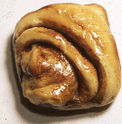

P335 Cognitive Psychology
,
Prof. John K. Kruschke
Ambiguity in Perception:
Even looking at a cinnamon roll is uncertain!
This might look like an ordinary cinnamon bun...

But it's really the
miraculous Nun Bun
:
For more about this silliness, read
The History of the Nun Bun
.